Profile picture.
The page's face in every post, comment and message. Facebook masks it to a circle.
- Size
- 400 × 400 px
- Ratio
- 1:1
- File
- PNG
- Max file size
- PNG or JPG, under 1 MB
- Safe zones
- Circle crop
Everything the unifiedmeds Facebook Page needs, in two options each: Option A is calm and editorial (photo-led, a serif headline), Option B is graphic (the capsule kit and colour). Each asset shows its desktop and its phone treatment.
The kit is approved for use. The profile picture is Option B, the white u|m on Navy (R-93, U-27). Lines come from the line bank and are candidates; legal approves every post before it runs (U-30). Shared rules for every channel: Social overview.
Option A or B per asset (Avi). Photos are Pexels stand-ins, not approved, to replace before anything is posted (R-39, O-13).
The kit's profile picture and banner in place, on a desktop browser and on a 390 phone. Dashed lines mark what each screen crops or covers.
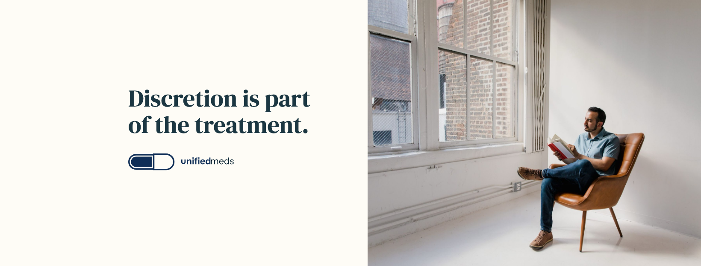
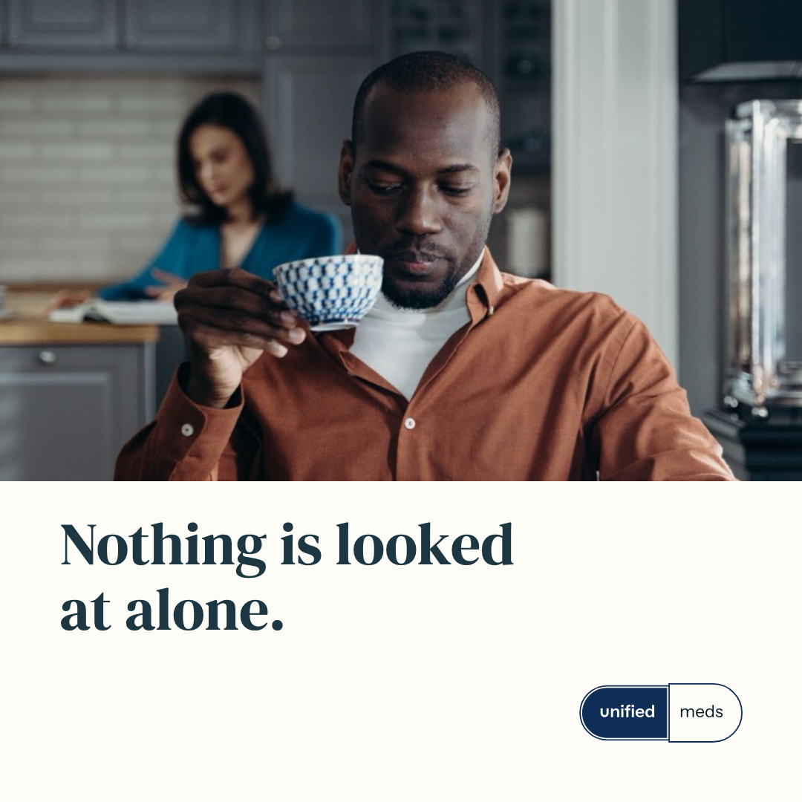
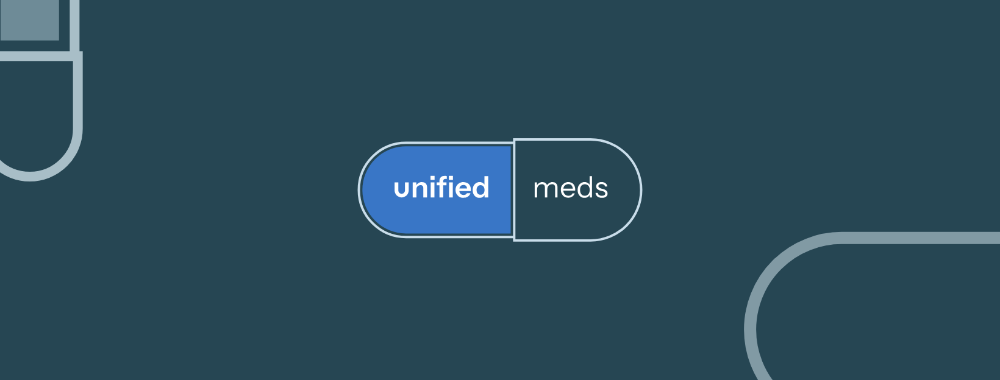
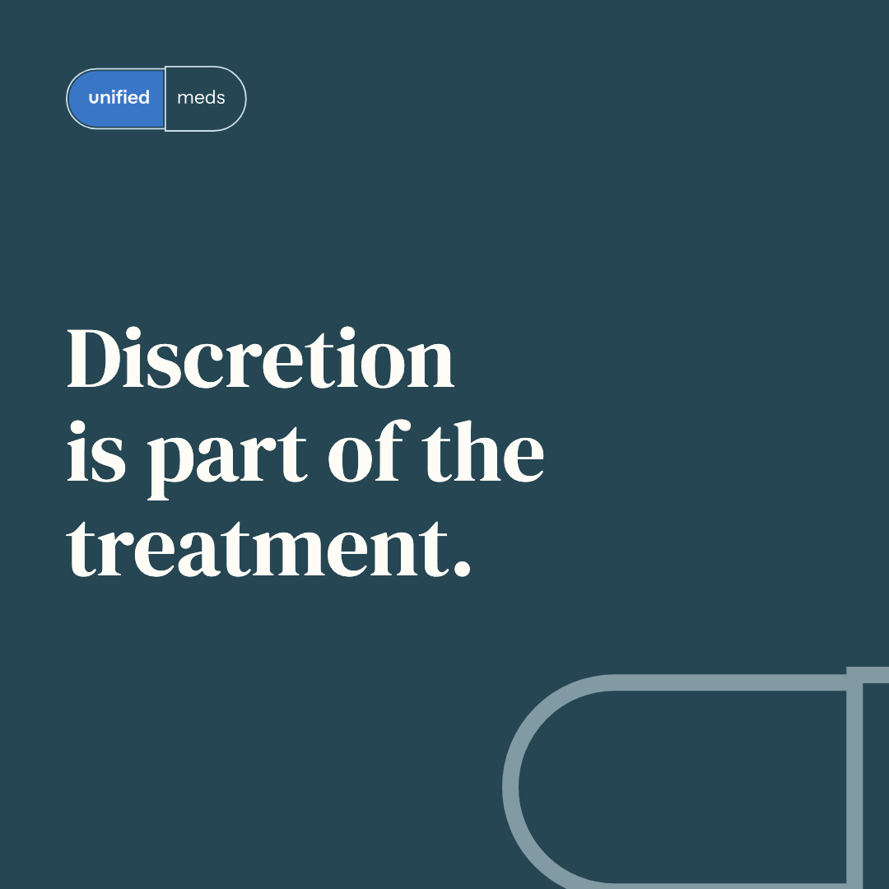
One block per asset: the use, the exact size, the safe zones, then Option A (calm, photo-led) and Option B (graphic, the capsule kit) side by side, and the asset in its real context.
Profile picture · Cover photo · Feed post, square · Feed post, 4:5 · Link share image · Story · Event cover · Ad-ready post
The page's face in every post, comment and message. Facebook masks it to a circle.
The banner across the top of the Page. Desktop shows the full width; the app shows a 16:9 centre crop.
Organic posts that must also fit other placements, and carousel cards.
unifiedmeds Every answer is read by a licensed provider, and they decide the next step with you. Start when it suits you: [link]
The default feed post: the most screen on a phone.
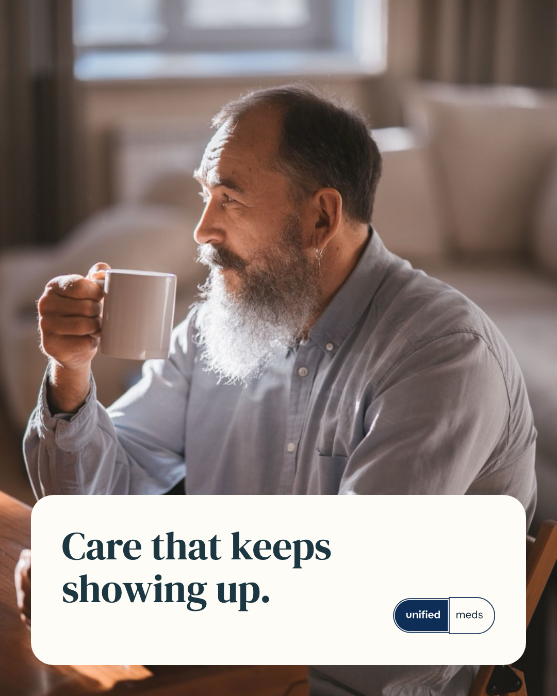
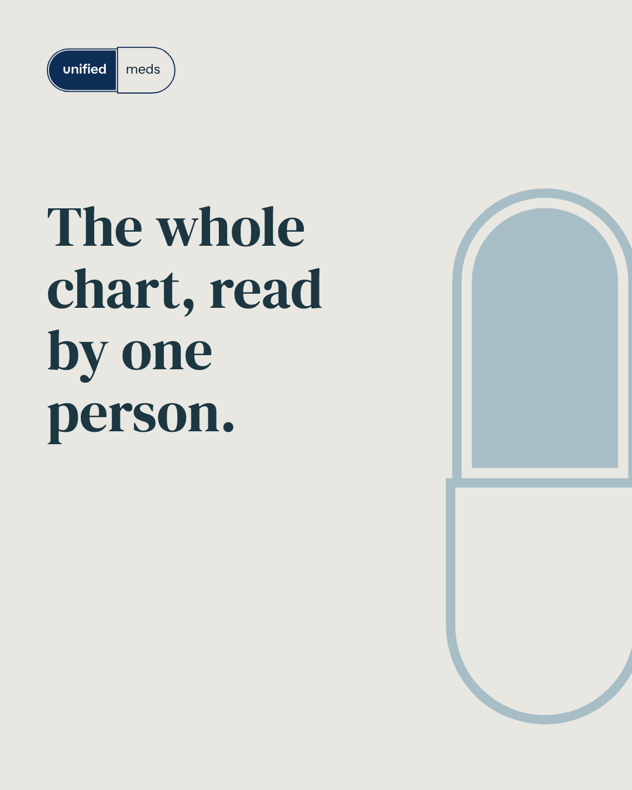
unifiedmeds Every answer is read by a licensed provider, and they decide the next step with you. Start when it suits you: [link]
The image a shared website link shows (og:image). The title and domain sit under it, set by the page.
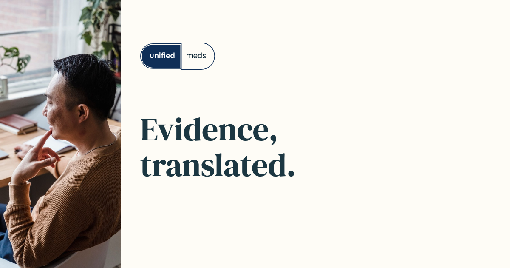
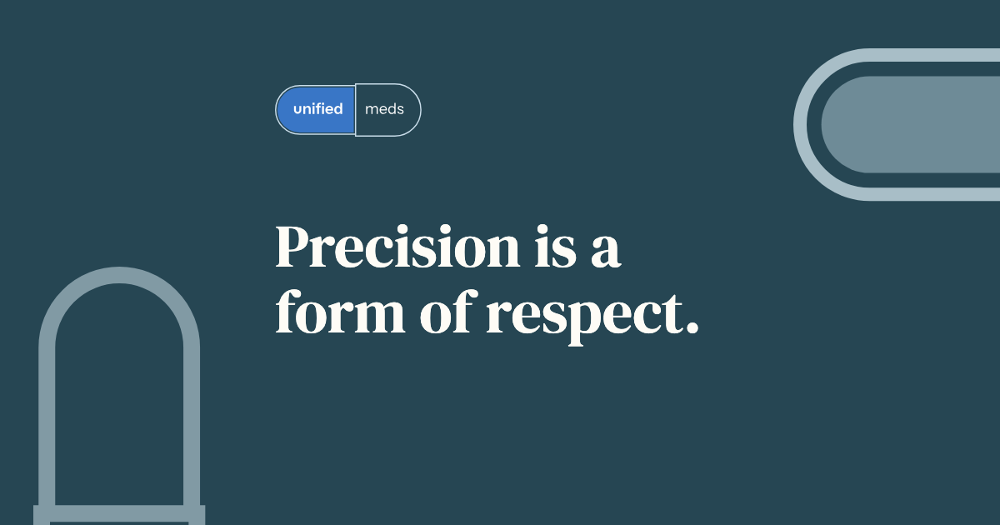
What a provider looks at, in plain words. A short read: [link]
Full-screen, 24 hours. Sound often on; Facebook adds the reply bar and the profile row.
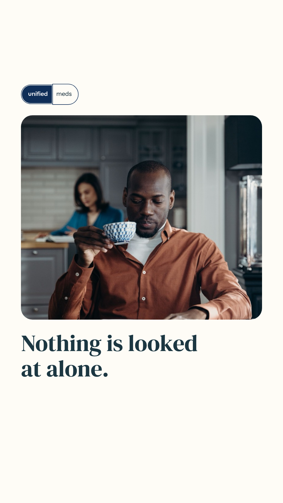
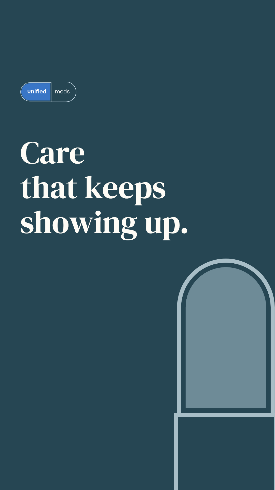
The header of a Facebook event (a live Q&A, a launch). Details in brackets until the event is set.
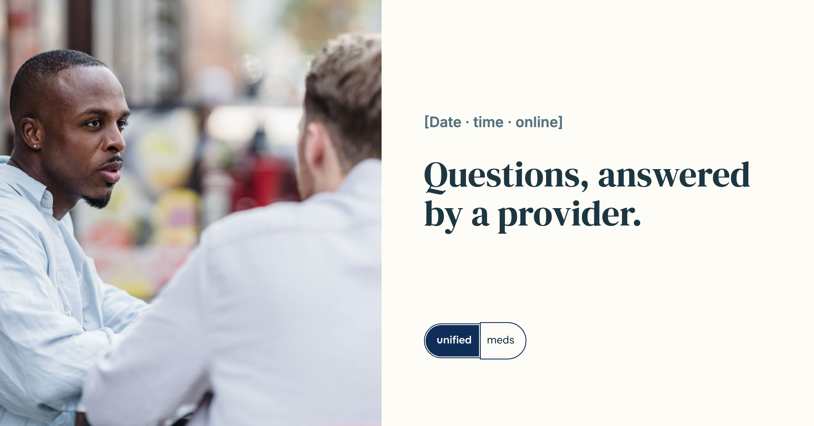
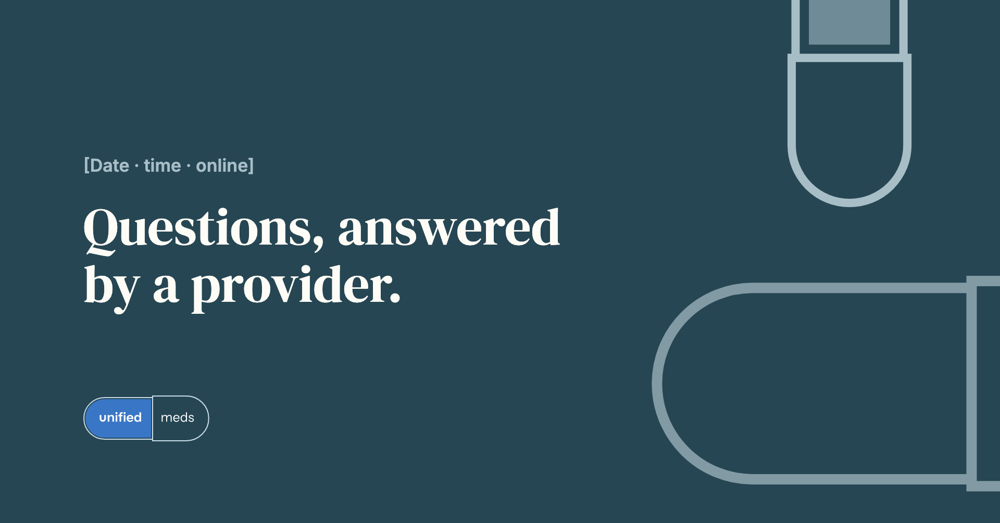
A boosted post or Meta ad. Follows the Ads page: headline of nine words or fewer, one Yellow CTA, the legal line inside the art.
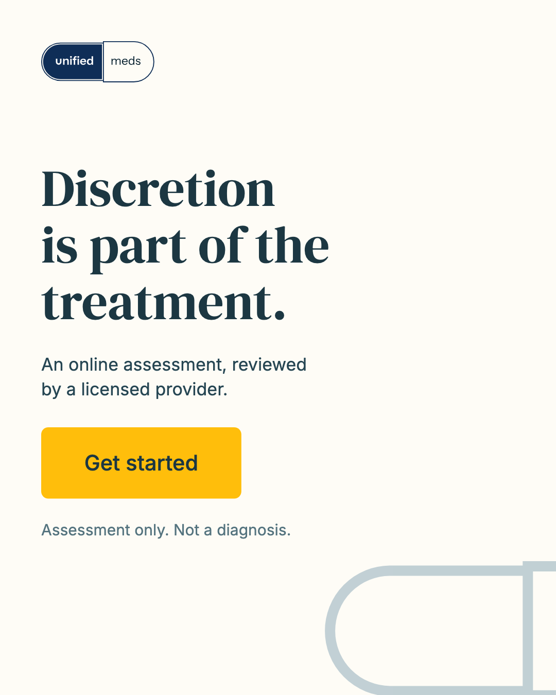
unifiedmeds Every answer is read by a licensed provider, and they decide the next step with you. Start when it suits you: [link]
Most people meet this channel on a phone. Sizes in px are on the exported file unless marked; display sizes are approximate and platforms change them, so check before a campaign.
| Asset | Desktop shows | Phone shows | Keep inside the safe zone | Smallest type that stays readable on a phone |
|---|---|---|---|---|
| Profile picture | 176 px circle on the Page, 40 px next to posts | 196 px circle, 40 px in the feed | The mark inside the centre circle | No type: the mark only |
| Cover | Full 1640 × 624 (2.63:1) | 16:9 centre crop: the middle 1110 px | Headline and logo inside x 265 to 1375 | Headline 54 px on the file (about 18 px on a phone) |
| Feed post 1:1 and 4:5 | Shown whole, about 500 px wide | Shown whole, full phone width | 60 px margin | Serif 76 px and Inter 30 px on a 1080 file |
| Link share | Full 1.91:1 under the text | Full width; some placements crop to 1:1 | The centre square | Serif 72 px on the file |
| Story | Opens in a phone-shaped frame | Full screen 9:16 | Clear of the top and bottom 14% | Serif 88 px, Inter 30 px |
| Event cover | Full 1.91:1 | Full width, a little smaller | 5% margin all round | Serif 84 px on a 1920 file |
| Ad-ready post | Feed, right column at 1.91:1 (from the Ads page) | Feed 4:5, Stories 9:16 | Ads page safe areas | Serif 72 px, legal line 30 px |
Discreet, plain and short. No prescription names in any social asset or caption, no promise of results, no before and after. Square brackets mark what Avi or legal fills in.
Men's health, online. An assessment read by a licensed provider. Assessment only. Not a diagnosis.
98 of 101 charactersDiscretion is part of the treatment. Online assessments, read by licensed providers.
84 of 101 charactersEvery answer is read by a licensed provider, and they decide the next step with you. Start when it suits you: [link] Assessment only. Not a diagnosis.
Bring your general questions about men's health to a live session with a licensed provider, [date · time]. Join here: [event link] General information only, not advice for any one person.
What a provider looks at, in plain words. A short read: [link]
Zero to two hashtags, branded or neutral only (#unifiedmeds, #menshealth). Never a condition, symptom or medicine as a hashtag. Links may sit in the post; use the website URL with UTM tags, never a link that opens the assessment with answers filled in.
On top of the shared social rules and the rules on Voice and compliance.
Every file at its exact size. PNG to upload; SVG to edit.
| Asset | Option | File | Pixels | File size | Download |
|---|---|---|---|---|---|
| Profile picture | A | facebook-avatar-a.png | 400 × 400 | PNG 8 KB | PNG · SVG |
| Profile picture | B | facebook-avatar-b.png | 400 × 400 | PNG 8 KB | PNG · SVG |
| Cover photo | A | facebook-cover-a.png | 1640 × 624 | PNG 513 KB | PNG · SVG |
| Cover photo | B | facebook-cover-b.png | 1640 × 624 | PNG 26 KB | PNG · SVG |
| Feed post, square | A | facebook-post-square-a.png | 1080 × 1080 | PNG 609 KB | PNG · SVG |
| Feed post, square | B | facebook-post-square-b.png | 1080 × 1080 | PNG 49 KB | PNG · SVG |
| Feed post, 4:5 | A | facebook-post-portrait-a.png | 1080 × 1350 | PNG 912 KB | PNG · SVG |
| Feed post, 4:5 | B | facebook-post-portrait-b.png | 1080 × 1350 | PNG 59 KB | PNG · SVG |
| Link share image | A | facebook-link-a.png | 1200 × 630 | PNG 337 KB | PNG · SVG |
| Link share image | B | facebook-link-b.png | 1200 × 630 | PNG 36 KB | PNG · SVG |
| Story | A | facebook-story-a.png | 1080 × 1920 | PNG 672 KB | PNG · SVG |
| Story | B | facebook-story-b.png | 1080 × 1920 | PNG 63 KB | PNG · SVG |
| Event cover | A | facebook-event-a.png | 1920 × 1005 | PNG 740 KB | PNG · SVG |
| Event cover | B | facebook-event-b.png | 1920 × 1005 | PNG 68 KB | PNG · SVG |
| Ad-ready post | A | facebook-ad-a.png | 1080 × 1350 | PNG 819 KB | PNG · SVG |
| Ad-ready post | B | facebook-ad-b.png | 1080 × 1350 | PNG 77 KB | PNG · SVG |
Photo-led files over 1 MB also come as JPG (quality 80): upload the JPG where the platform recompresses anyway. SVG files keep live type (DM Serif Display, Inter, loaded from Google Fonts) and link the photos in assets/photos/; open them in a browser or Figma with the fonts installed. Rebuild every file: python3 -I assets/social/shared/make_social.py, then python3 -I assets/social/shared/build_kit_pages.py and python3 -I tools/build_pages.py.